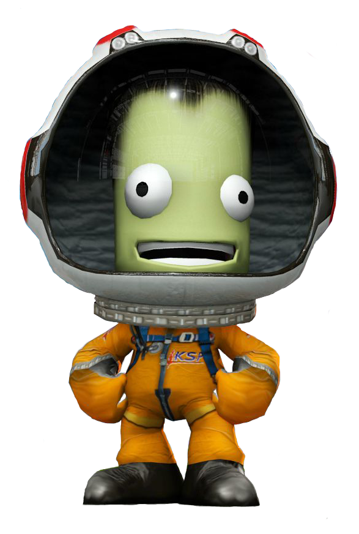
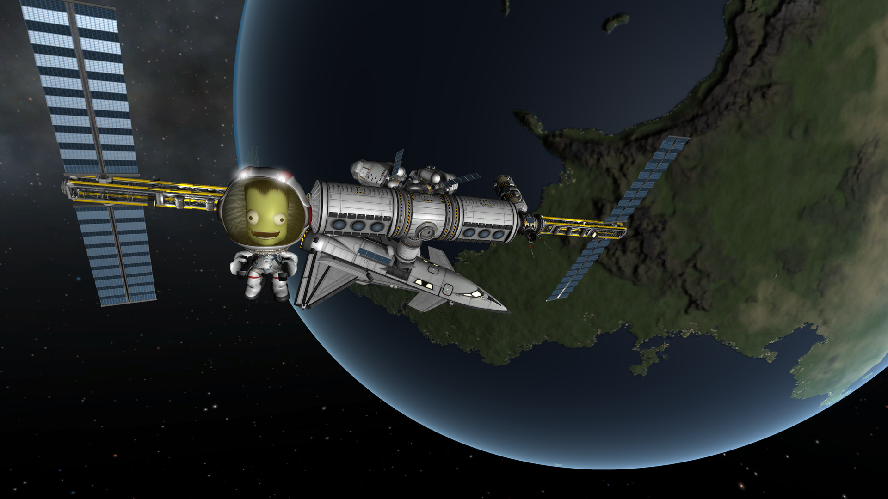
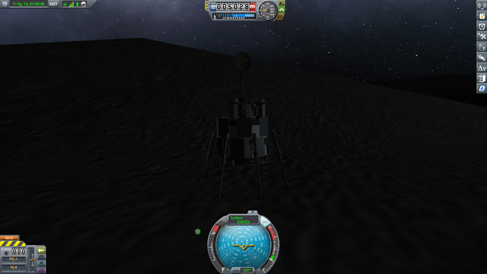
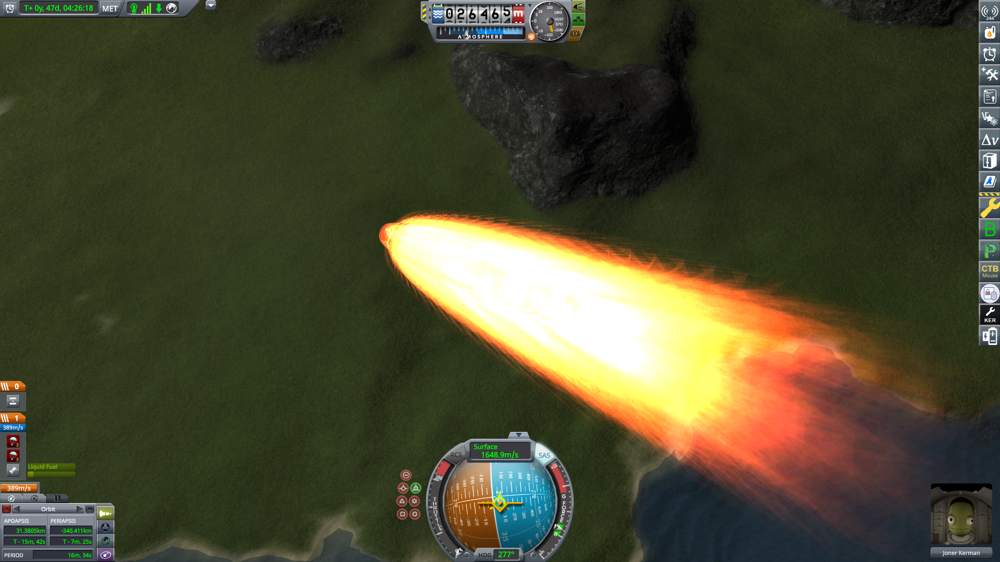
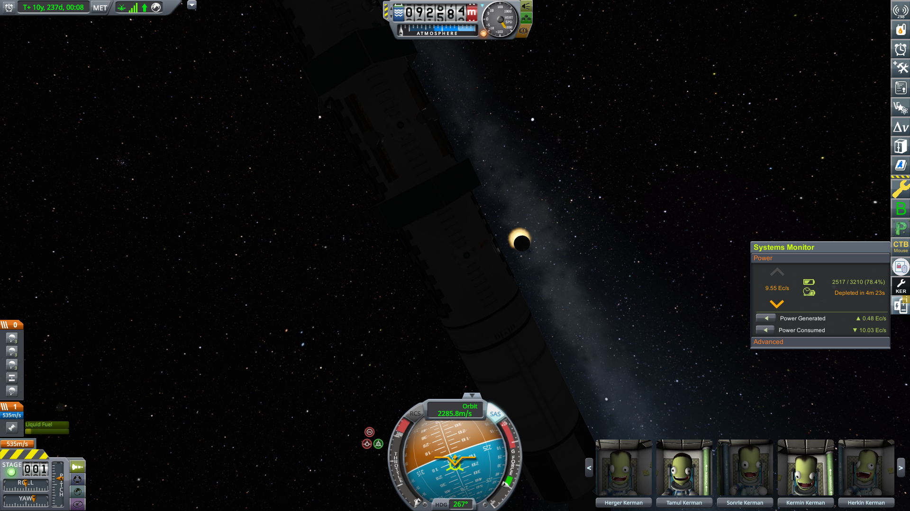
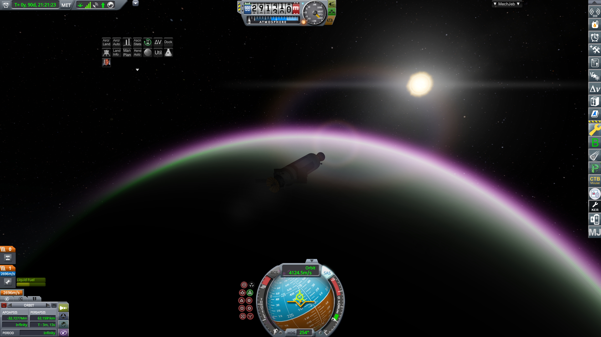
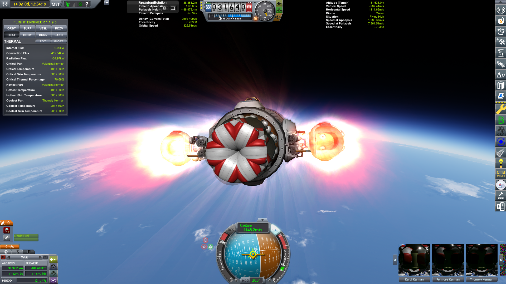
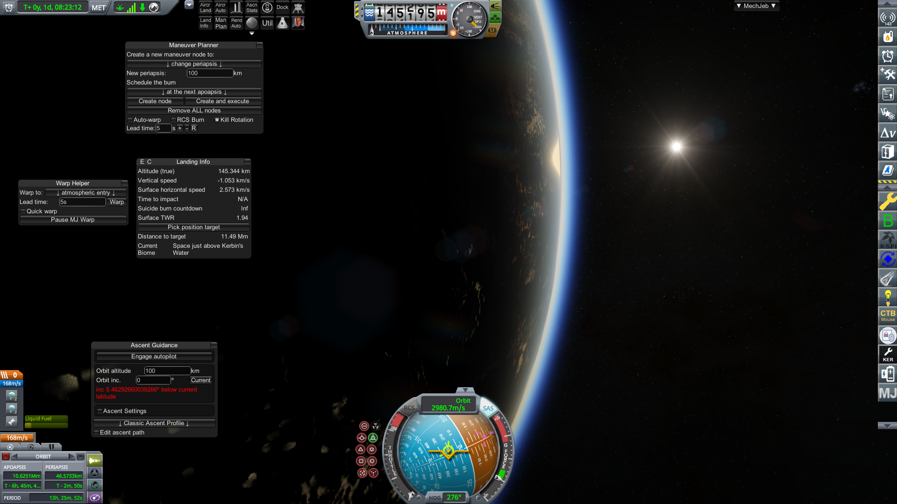

Kerbal space program. A game. That's what it is. But, it's a fun one. Here are some pictures of the game and some context surrounding them.
Kerbal space program. A game. That's what it is. But, it's a fun one. Here are some pictures of the game and some context surrounding them.


A small orbital station with a kerbal hanging out outside it. Not much to say, but it's pretty cool.

My first mun lander. Very neat, but there's not much to say about it.

Aerobraking on kerbin. Parachutes are deployed and heat shield is soaking up heat, and this led to a sucsessful landing.

My science station going through a solar eclipse, Extremely cool, but blocked the solar panels and caused some issues.

Landing on eve with the scatterer mod! Looks great, and the landing went well, which is just the cherry on top.

Returning to kerbin after a trip to the mun... Unfortunately I forgot that these two kerbal's seats were not protected, so they got slightly roasted. They made it out fine though, and that's what matters.

Sunrise in orbit. Nothing much to say, but it's a beautiful sight.